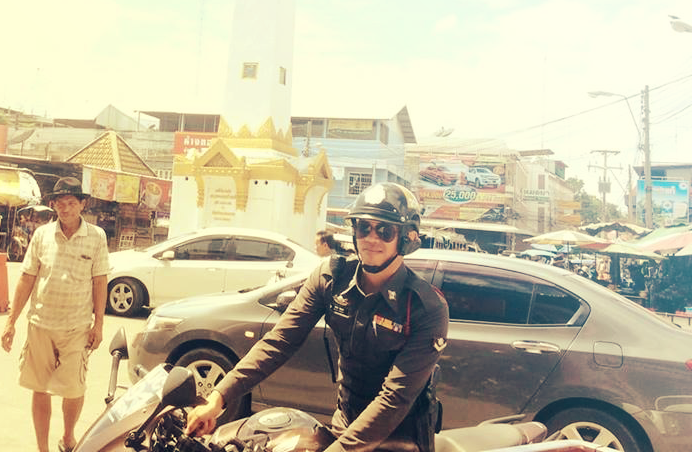

ตั้งค่าระยะค้นหาสถานีตำรวจ
20 กิโลเมตร
40 กิโลเมตร
60 กิโลเมตร
80 กิโลเมตร
100 กิโลเมตร
ผู้พัฒนา
bars
Cancel
Scrollable Tab Bar
arrow_left
arrow_left
ผู้พัฒนา

ผู้พัฒนา
ส.ต.ต. วสันต์ ในณงค์
ผบ.หมู่ งานป้องกันปราบปราม สภ.เมืองสุรินทร์
แอพพลิคชั่นนี้เป็นแอพพลิเคชั่นสำหรับค้นหาสถานีตำรวจรอบๆตัวเรา บอกสถานีตำรวจไหนใกล้ตัวเราที่สุด มีรายละเอียดของสถานีตำรวจนั้น เบอร์โทร ปุ่มสำหรับโทรด่วน เมื่อมีเหตุฉุกเฉิน สามารถแจ้งเข้าสถานีตำรวจใกล้ตัวคุณโดยตรง ผู้พัฒนาหวังว่าแอพพลิเคชั่นนี้จะเป็นประโยชน์กับผู้ใช้ เมื่อมีเหตุจำเป็น ฉุกเฉิน